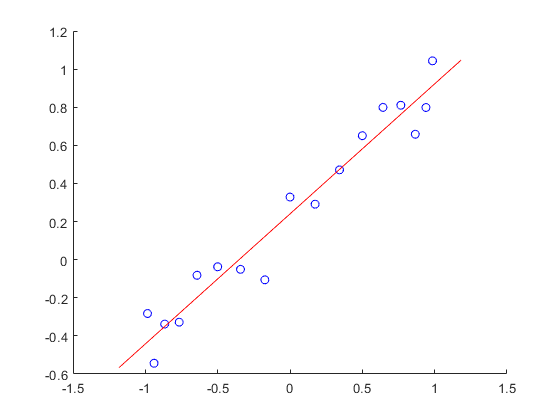
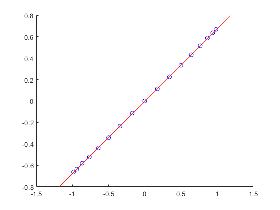
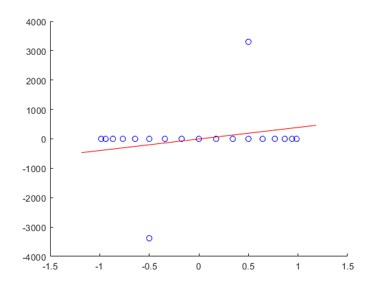
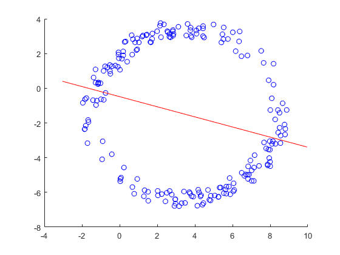
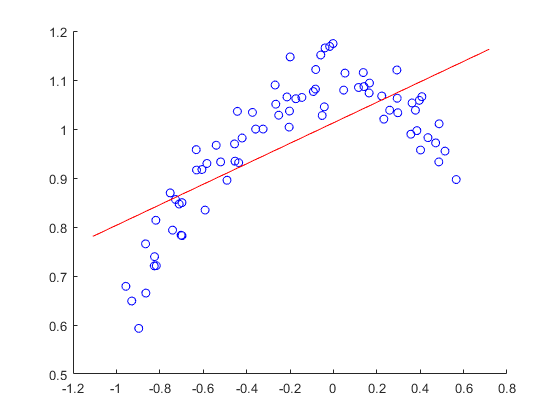

data=load('Data\data1.dat');
PlotRegression(data)

data=load('Data\data2.dat');
PlotRegression(data)

data=load('Data\data3.dat');
PlotRegression(data)

data=load('Data\data4.dat');
PlotRegression(data)

data=load('Data\data5.dat');
PlotRegression(data)

data=load('Data\data2.dat');
[a,b]=RegressionAffine(data)
[a,b]=RegressionAffine2(data)
function [a,b]=RegressionAffine(data)
x=data(:,1);
y=data(:,2);
n=length(x);
out =[dot(x,x) sum(x); sum(x) n]\[dot(x,y); sum(y)];
a=out(1);
b=out(2);
end
function [a,b]=RegressionAffine2(data)
x=data(:,1);
y=data(:,2);
out=[x ones([length(x),1])]\y;
a=out(1);
b=out(2);
end
function PlotRegression(data)
[a,b]=RegressionAffine(data);
x=data(:,1);
y=data(:,2);
plot_points = 100;
plotWidth=max(x)-min(x);
plotRange=[min(x)-0.1*plotWidth max(x)+0.1*plotWidth];
xRegression = plotRange(1):plotWidth/plot_points:plotRange(2);
yRegression = a*xRegression+b;
cla
hold on
plot(x,y,'ob')
plot(xRegression,yRegression,'-r')
hold off
end